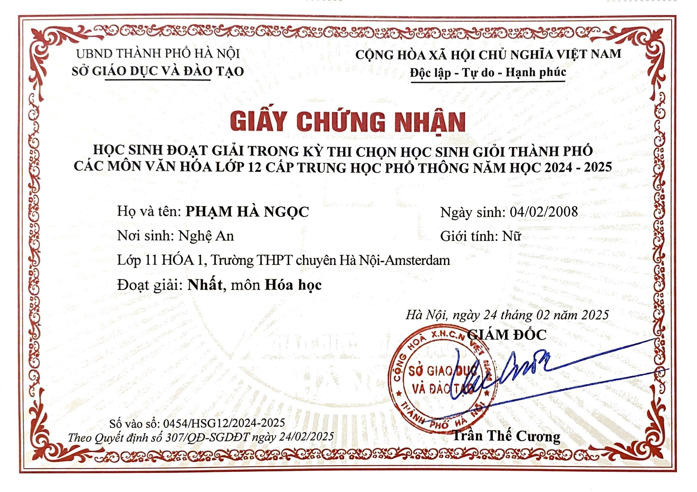
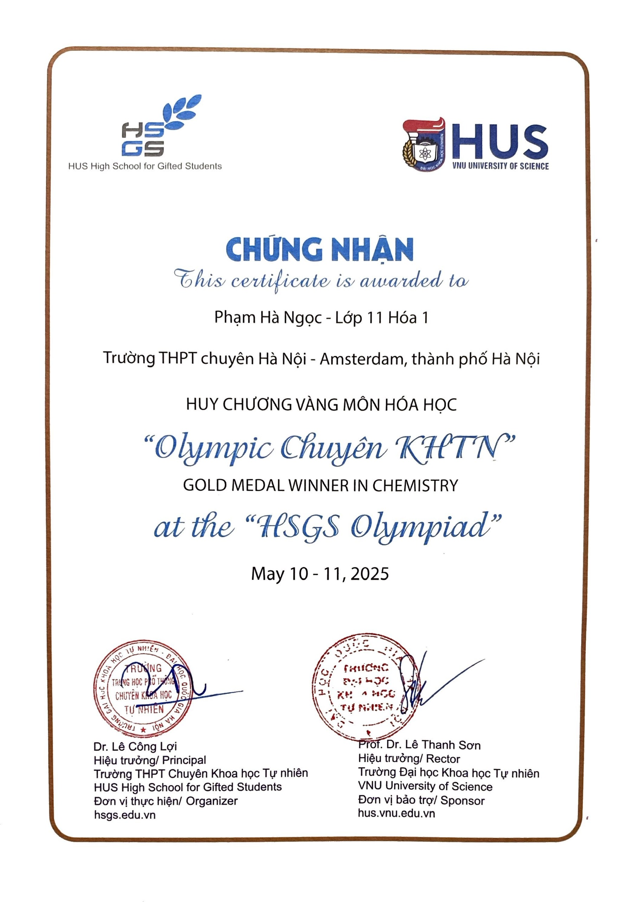
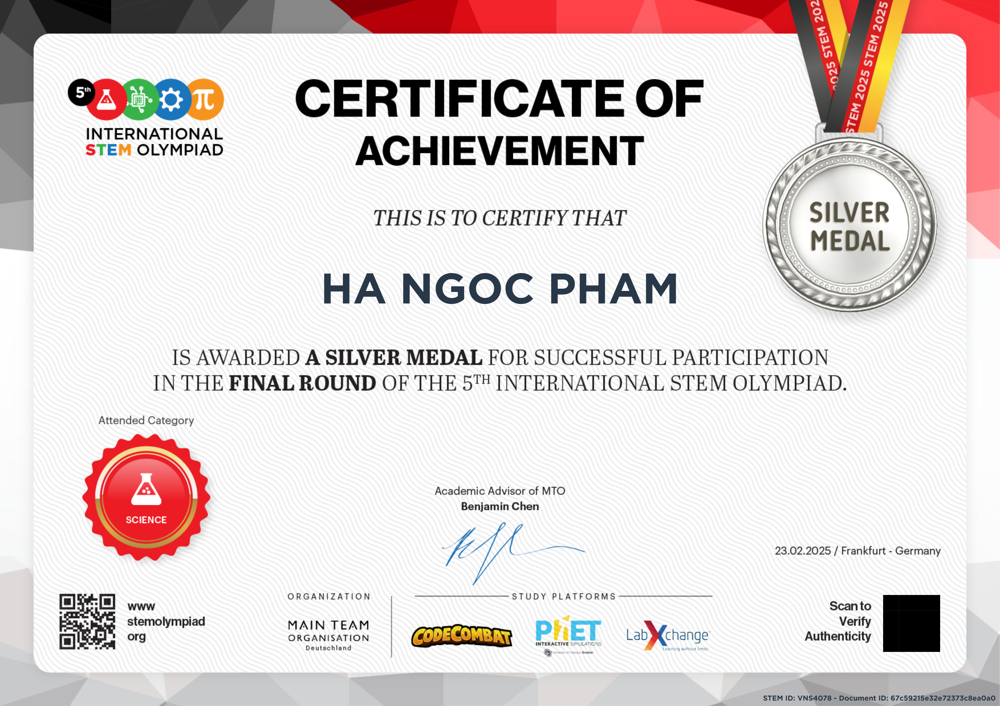
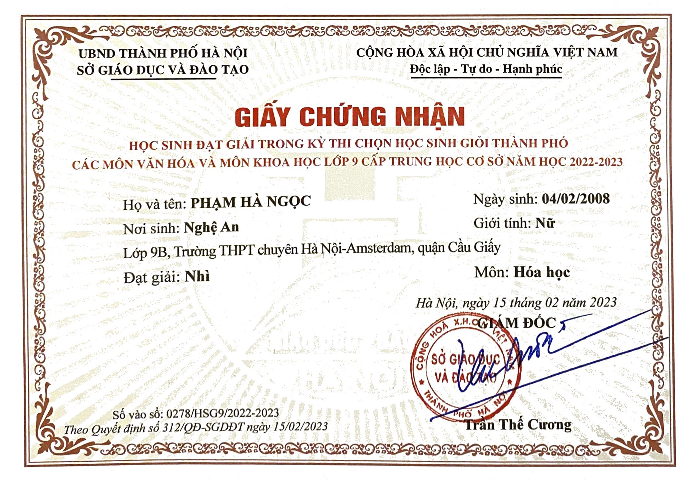
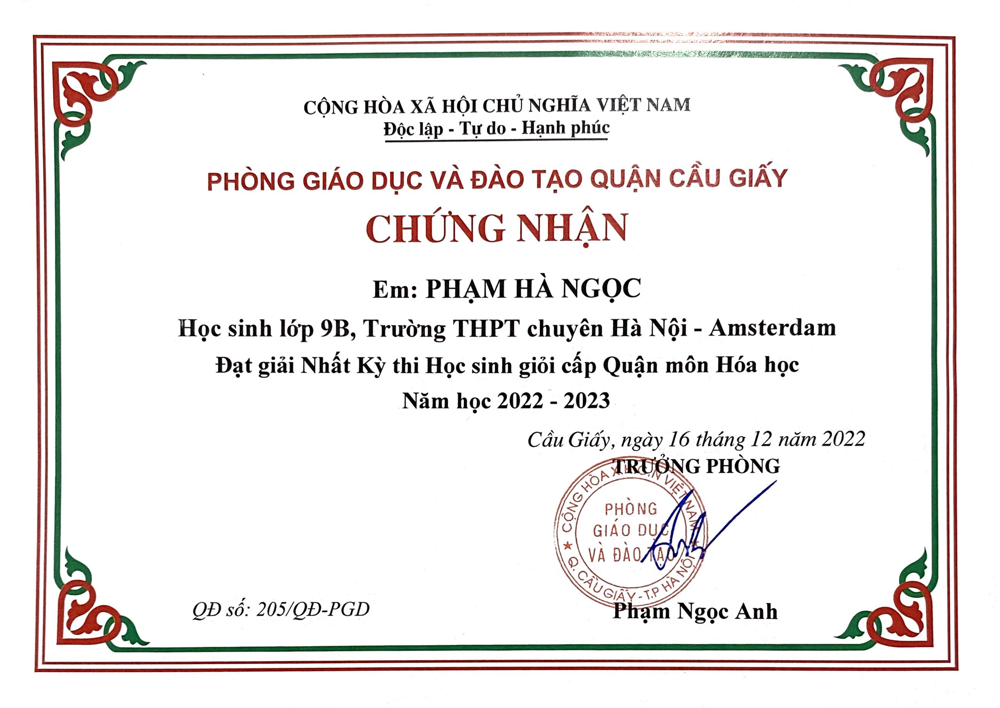
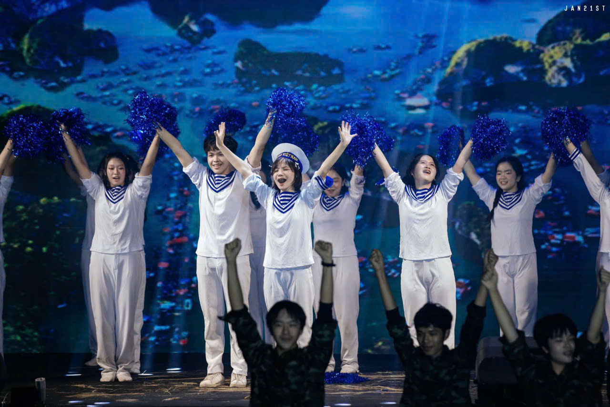
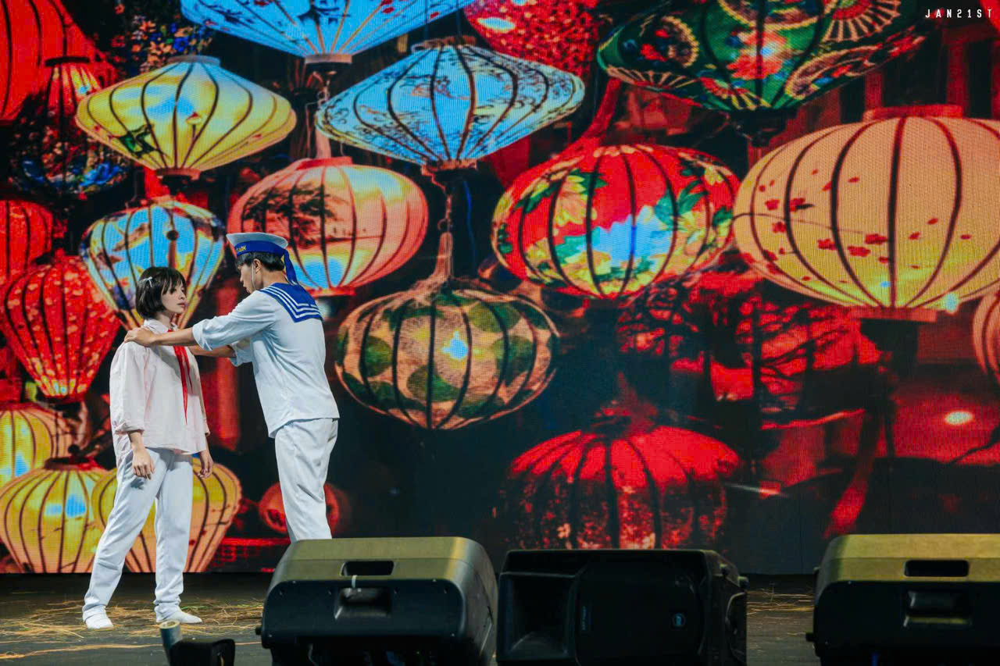
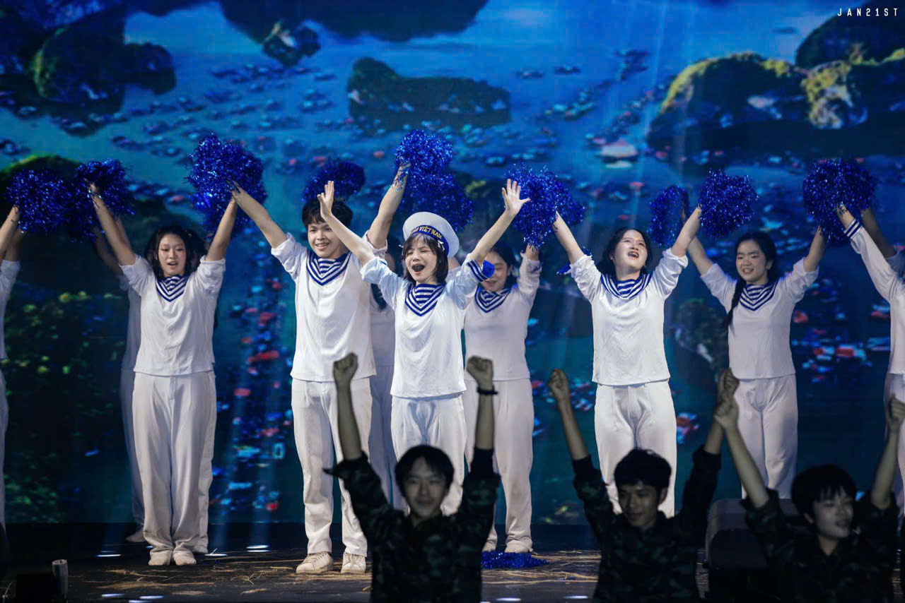
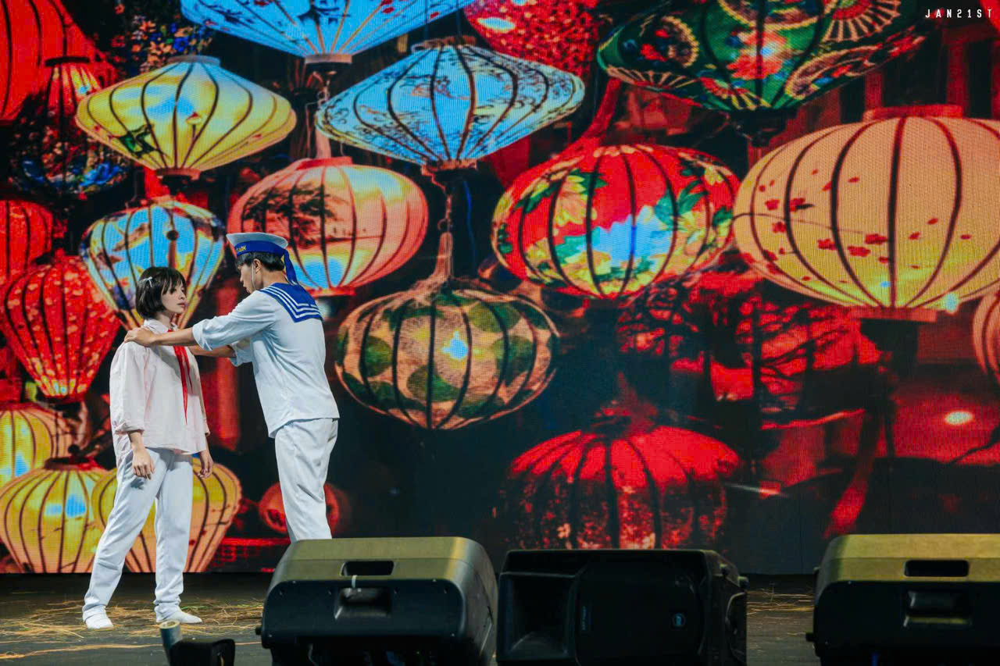

HONORS & AWARDS
×

Advanced Innovation Global Competition 2024
Topic: Research on the Bioactivity of Saponin from Bitter Melon and Its Application in Supporting Diabetes Treatment
.jpg)
.jpg)
.jpg "Image 3")
.jpg "Image 4")
49th International Invention Show (INOVA-Croatia 2025)
Topic: Extraction of Cinnamaldehyde from Vietnamese Cinnamon for the Formulation of Emulsion Gel to Inhibit Biofilm Formation on Medical Devices
.jpg)
.jpg)
.jpg)
.jpg)

.jpg "Image 2")
.jpg "Image 3")
Chemistry - Hanoi High School Olympiad 2025

Chemistry - Natural Science Olympiad of HUS High School for the Gifted Students 2025

Chemistry - High School Olympiad of Vietnam National University 2024

International STEM Olympiad 2025

Chemistry - Hanoi Secondary School Olympiad 2022

Chemistry - Cau Giay District Secondary School Olympiad 2022

.jpg)
.jpg)
.jpg)
.jpg)
.jpg)
.jpg) 



.jpg)
.jpg)
.jpg)
.jpg)
.jpg)
.jpg)
.jpg)
SOCIAL WORK & ACTIVITIES
Member of Green Hanoi - Amsterdam Club (GHA)
Participated in a prominent environmental club at school, aiming to raise students' awareness of the environment and local cultures through various community projects and workshops.
Leader of Finance and MC of Camp Blast
Camp Blast is a one-week summer camp for children organised by Green Hanoi - Amsterdam club.
Volunteered at SOS Children's Village
Location: SOS Children's Village, Pham Than Duat Street, Mai Dich Ward, Cau Giay District, Hanoi.
Volunteered at Thuy An Rehabilitation Center for People with Disabilities
Location: Thuy An commune, Ba Vi district, Hanoi.